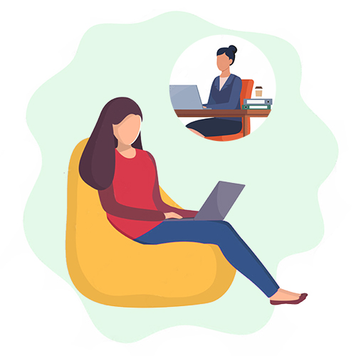
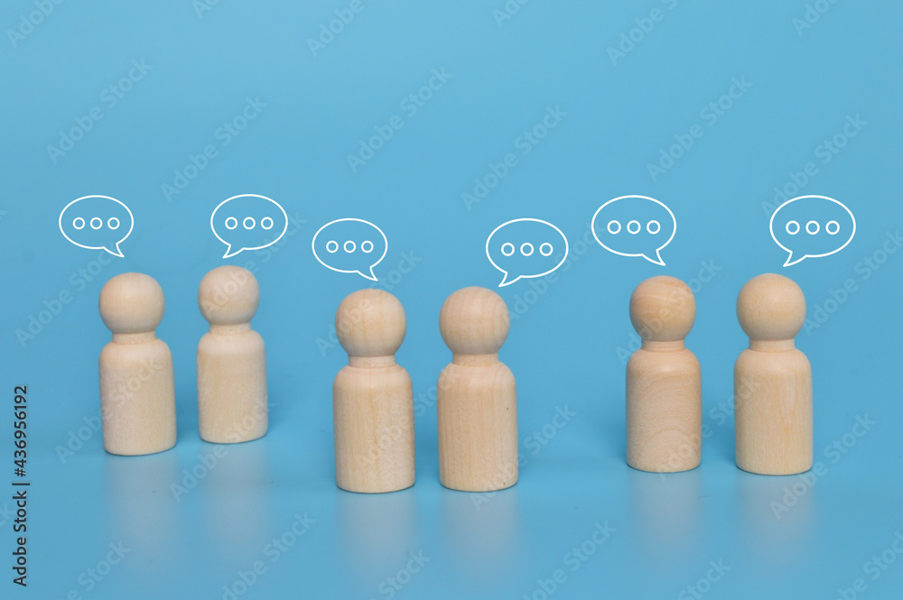
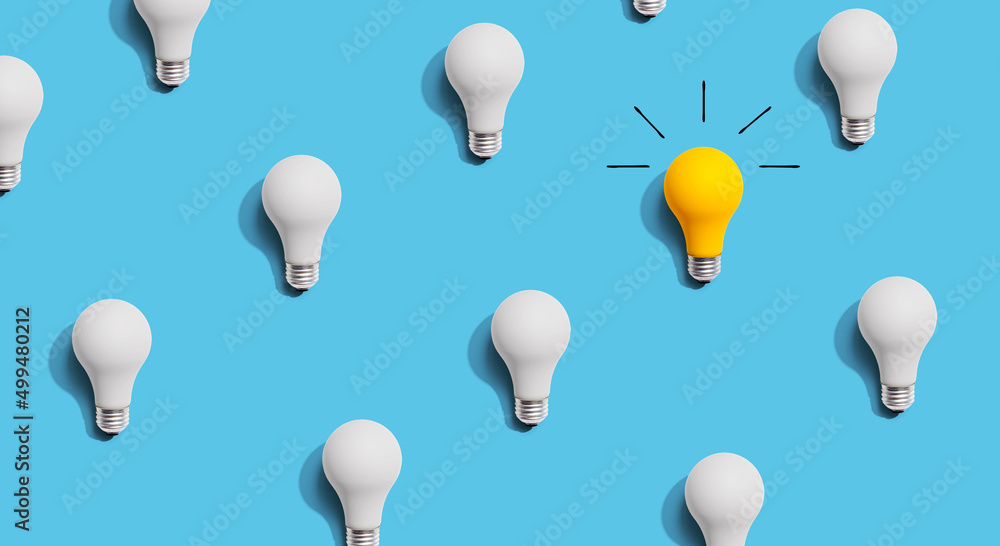

セルフチェック
しませんか?

・神経質性格度チェック
・対人恐怖症チェック
・パニック症チェック
・強迫症チェック
・うつ病チェック
・その他チェック
相談して
みませんか?

・電話・面接相談
（対面方式とオンライン形式）
・無料カウンセリング
（対面形式とオンライン形式）
・森田療法医療機関
・外部森田療法カウンセリング
不安症を理解し
克服を支援します

・森田療法とは
・森田療法の治療法
・森田療法の症状別治療法
こころの健康をサポートします
SEMINAR
健康セミナー配信
神経症やパニック、強迫症、うつ病など不安症の原因や治療に関する様々な情報をセミナー形式で配信しています。特に不安症の治療で実績のある日本の精神療法「森田療法」を中心にその治療法や回復のためのサポートをご案内をしています。また参加型イベントとしての心の健康セミナーも実施しています。視聴及び参加は全て無料です。
ADVICE
克服体験や症状別アドバイス
多様な不安症の症状から回復した体験記や会員制掲示板（体験フォーラム）で精神科医や心理士からコメントされたアドバイスなどを掲載しています。うつ病やパニック症、強迫症、病気不安症など様々な症状に対する克服法や症状別のアドバイスが沢山掲載されていますので、同じような悩みを抱えている方は是非ご覧下さい。
克服体験談
症状別アドバイス

FORUM
体験フォーラム（会員制の掲示板）
不安症で実際にお悩みの方、もしくは不安症を克服された方が集う相互扶助形式の会員制掲示板です。会員は男女共に約半々で、月に1回東京慈恵会医科大学の精神科医の先生方から各会員に向けてコメントもいただいています。使用料は無料です。
MEDICAL
森田療法医療機関とカウンセリング
不安症の治療はどこですれば良いのか。そんなお悩みの方のために当方が推挙する医療機関をリストアップし連絡先やWebサイトへのリンクを掲載しています。森田療法を中心とした不安症の治療やお問合せにご活用下さい。また当方と連携する森田療法の外部カウンセリングリストも掲載していますので、ご活用ください。
BOOKS
図書の閲覧・貸出・ビデオ視聴
当財団には精神分野の専門図書室もあります。森田療法をはじめとする精神療法書籍を約2000冊ご用意していますので、ご自由に閲覧、貸出ができます。また必要であればコピーサービス（有料）もご利用になれます。同時に心の健康セミナーなどで配信しましたビデオは、図書室にて無料で視聴することができます。

LINK
森田療法関連リンク
森田療法の学習・実践するボランティア組織として生活の発見会や日本森田療法学会など、一般市民や研究者を含めた森田療法に関連するリンク情報です。